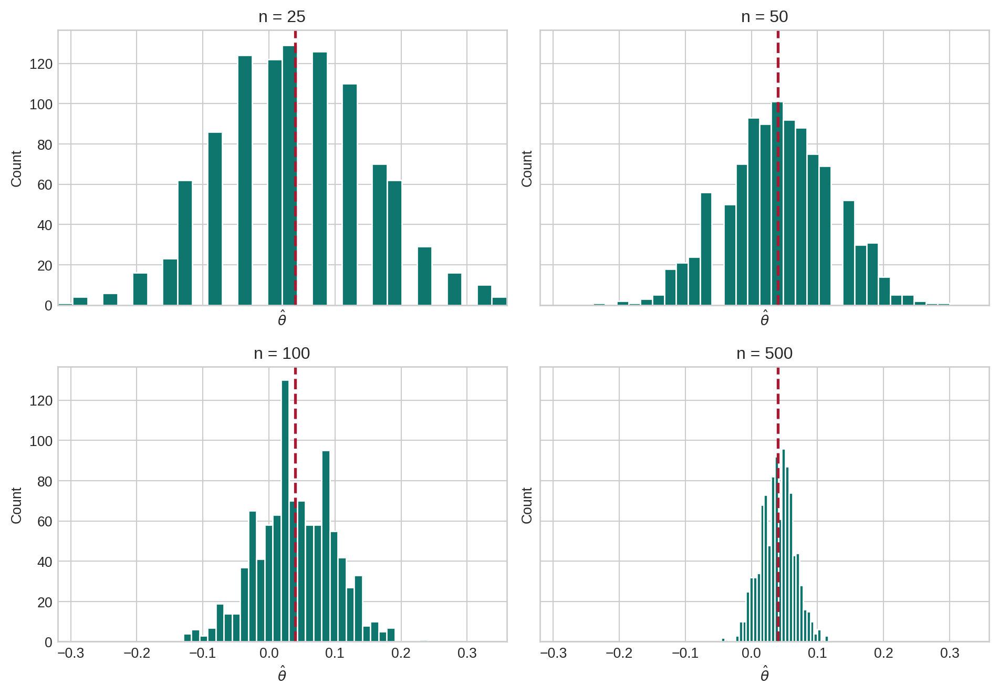

MGTA-495 HW1: A/B Testing and Simulating Key Ideas in Frequentist Statistical Inference
A/B Testing a Call to Action
Statistics
A/B Testing
Python
Author
Ben Kleiman
Published
April 13, 2026
Introduction
Suppose my website has a place where visitors can sign up for a newsletter. I want to test which of two calls to action gets more sign-ups.
CTA A: “Sign up for our newsletter here!”
CTA B: “Stay up to date by signing up!”
I can study this with an A/B test. In an A/B test, visitors are randomly shown one version or the other, and then I compare the sign-up rates in the two groups.
The A/B Test as a Statistical Problem
Each visitor either signs up or does not sign up, so each outcome is Bernoulli. Let \(\pi_A\) be the sign-up probability for CTA A and let \(\pi_B\) be the sign-up probability for CTA B.
The quantity I care about is
\[
\theta = \pi_A - \pi_B,
\]
which is the difference in sign-up rates.
I estimate this with the difference in sample means:
\[
\hat\theta = \bar{X}_A - \bar{X}_B.
\]
Because the data are 0s and 1s, each sample mean is just a sample proportion.
Simulating Data
In real life, I would not know the true values of \(\pi_A\) and \(\pi_B\). For this exercise, I set them myself so I can compare my estimates to the truth.
I will use \(\pi_A = 0.22\) and \(\pi_B = 0.18\), so the true difference is \(\theta = 0.04\). Then I simulate 1,000 observations for each group.
Table 1: Simulated sign-up rates and the true values
Group
Estimate
True value
CTA A
0.2100
0.2200
CTA B
0.1800
0.1800
Difference
0.0300
0.0400
The simulated rates are close to the true values, but not exactly equal. That small gap is sampling variation.
The Law of Large Numbers
The Law of Large Numbers says that as the sample size gets larger, the sample mean gets closer to the population mean. That means \(\hat\theta\) should get closer to the true \(\theta\) when the sample is large.
To show this, I take the element-wise differences between the A and B draws and compute the running average.
At first the running average moves around a lot. As more observations are included, it settles down near 0.04. This is what the Law of Large Numbers predicts.
Bootstrap Standard Errors
Next, I want to know how precise my estimate is. The bootstrap helps with this. I resample the observed data with replacement many times, compute the difference in means each time, and use the standard deviation of those bootstrap estimates as the bootstrap standard error.
The bootstrap standard error and the analytical standard error are very close. That means both methods are giving a similar measure of uncertainty. The confidence interval gives a reasonable range for the treatment effect.
The Central Limit Theorem
The Central Limit Theorem says that for large samples, the sampling distribution of the sample mean is approximately Normal. The same idea applies to the difference in sample means.
To show this, I simulate 1,000 estimates of \(\hat\theta\) for four sample sizes: 25, 50, 100, and 500.

For small samples, the histograms look rough. As the sample size increases, they become smoother and more bell-shaped. This is the Central Limit Theorem in action.
Hypothesis Testing
Now I test the null hypothesis
\[
H_0: \theta = 0
\]
against the alternative
\[
H_1: \theta \neq 0.
\]
I use the test statistic
\[
z = \frac{\hat\theta}{SE(\hat\theta)}.
\]
By the Central Limit Theorem, this statistic is approximately standard Normal under the null. That is why I can use it to compute a p-value.
This is often called a t-test in practice, but here it is closer to a z-test because the data are Bernoulli and the Normal approximation comes from the CLT.
The p-value shows whether the observed difference is large relative to the standard error. A small p-value would give evidence against the null of no difference.
The T-Test as a Regression
This same test can be written as a regression. I stack the two groups into one dataset with an outcome \(Y_i\) and an indicator \(D_i\) that equals 1 for CTA A and 0 for CTA B.
The regression coefficient matches the difference in means. This matters because regression makes it easy to extend the same idea to more complex settings.
The Problem with Peeking
Peeking is a problem in frequentist statistics because each extra test gives another chance for a false positive. A single test at the 5% level has a 5% false positive rate, but checking many times raises the chance of rejecting the null by mistake.
To show this, I simulate a world where the null is true: \(\pi_A = \pi_B = 0.20\). I test after every 100 observations per group and record whether any of the 10 tests is significant.